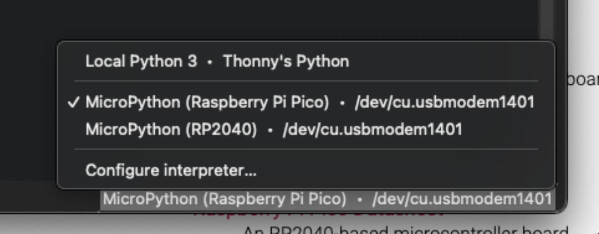
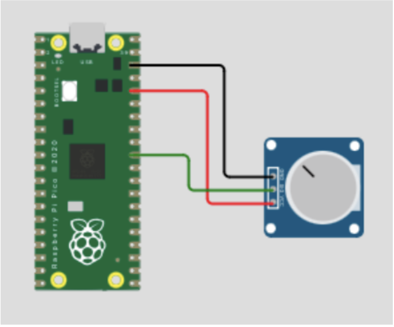
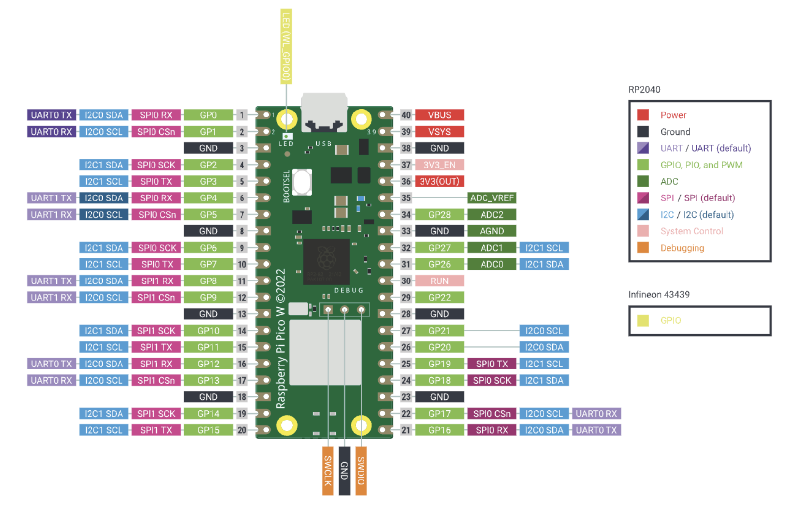

During college, I had the chance to work with a few different microcontrollers, which was around the same time that I discovered my passion for coding. While working as a Teaching Fellow for an electronics class, I was able to experiment with an Arduino Uno and found it to be an enjoyable experience. As I started to comprehend the capabilities and potential uses of this amazing little machine, I registered for an elective course that introduced me to the ESP32. This microcontroller was even more powerful, featuring built-in Bluetooth and WiFi, allowing me to perform some very impressive tasks. However, the ESP32 was incredibly unreliable, forcing me to purchase a second board. It was during this same period that the Raspberry Pi Foundation released the Pico W, another small computer with built-in wireless connectivity, much like the ESP32. Not only was the Pico W much more reliable, but it was also more affordable and cuter, so I knew I had to get one.
Download the correct MicroPython UF2 file for your board *here*
Plug the board in, holding down the BOOTSEL button, drag and drop the UF2 file
Plug it back in and open Thonny
Select the interpreter in the bottom right

Type in the shell the following: print(“hello world”)
You should be good to go!
The "Hello World" of microcontrollers: blinking an LED
In Thonny, type:
# Pin allows us to control the pins
from machine import Pin
# We need time to sleep (pause) the device
import time
# Defining a Pin object as the built in LED
# To select a different digital pin to control, we need to specify its number
# Uncomment the following line to control digital pin 5 (GPIO 3)
# led = Pin(3, Pin.OUT)
led = Pin("LED", Pin.OUT)
# Infinite loop to blink LED
while True:
print("Blink!")
led.on()
time.sleep(1)
led.off()
time.sleep(1)
Your LED should now be blinking
Lets try something a little harder
Wire it up as follows

In Thonny, type:
from machine import Pin, ADC
from time import sleep
# Set up a potentiometer with outer pins at 3.3V and gnd,
# and the middle pin connected to GPIO pin 26
# ADC functionality is available on pin 26
adc = ADC(Pin(26)) # create an ADC object
while True:
v = adc.read_u16() # read raw value from 0 to (2^16)-1 (65535)
print(f'read_u16: {v}')
sleep(0.1)
# 12-bit ADC, so read_u16() resolution is 2^4 since 2^(12+4) = 2^16
And you should get something like:
read_u16: 32920
To get a voltage, we need to do some math to this number according to the following formula
Voltage = (code*V_FSR)/(2^m)
Where:
You can change the print line to “print(f'read_u16: {v*3.3/(2**16)} V')” to print it as a Voltage. Keep in mind you can only read up to V_FSR. To read higher voltages, you'll need more circuitry.

Clickhereif page doesn't load correctly